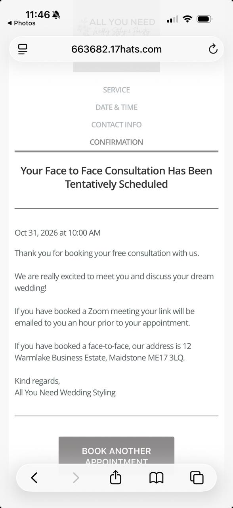

All You Need Wedding Styling
Free face-to-face wedding consultation
- When
- Saturday 31 October 2026, 10:00am GMT
- Where
- 12 Warmlake Business Estate
Maidstone ME17 3LQ - Calendar time
- 10:00–11:00am. One hour reserved as a placeholder; the confirmation does not specify a duration.
- Booking status
- The original confirmation says the consultation has been tentatively scheduled.
Original confirmation

